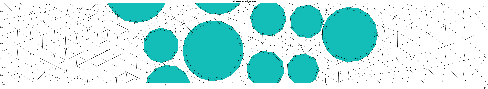

Predictor value vid
Predictor value vidRelevant links:
Project directory: /Users/jvn/MATLAB/0_bacteriaFlow
Predictor for fluid velocity:
HG: Hilbert interpolation? HG is making the program as matlab does not have the hilbert function
To do:

'generalized leapfrog' for predictor, as recommended by Gresho-Sani:
$$ y^P_{n+1} = y_n + \left(1+\frac{\Delta t_n}{\Delta t_{n-1}}\right)\Delta t_n \dot{y}_n - \left(\frac{\Delta t_n}{\Delta t_{n-1}}\right)^2(y_n-y_{n-1}) $$
bdf2a_error.m:
% Predict the velocity via 'generalized leapfrog':
% General Step, Step 1, Gresho-2000, p. 805. Eq.3.16-248
gPred(uIndx) = gOLD(uIndx) + ( 1+dtRatio )*dt*gDotOLD(uIndx) ...
- ( dtRatio^2 )*( gOLD(uIndx)-gOLD2(uIndx) );
gPred(vIndx) = gOLD(vIndx) + (1 + dtRatio)*dt*gDotOLD(vIndx) ...
- ( dtRatio^2 )*( gOLD(vIndx)-gOLD2(vIndx) );
gPred(pIndx) = gOLD(pIndx);
gPred_output = gPred;
gPred is now used as input for:
[a,ascaled,g,iter,hasError,res] = newtonbdf2a(area,eqn,gPred,gOLD,...
gOLD2,dt,dtRatio,indx,nelem,neqn,node,np,phi,region,nParticle,PX,PY,VF,VX,...
VY,xc,yc,owner,it);
bdf2a_error.m is located in the main driver, under the corrector-step comment (why???):
%% First corrector-step
% Non-stationary solution via BDF2
[g,iter,dtNew,hasError,Cnum,CnumScale,~,res] = bdf2a_error(gOLD,gOLD2,gOLD3,nelem,neqn,indx,npWOMid,dt,dtOld,...
it,node,np,area,eqn,phi,region,particleNum,PX,PY,VF,VX,VY,xc,yc,owner);
% Getting the solutions (velocities and pressures) out of G as U, V, P
[u,v,p] = evaluateG(np,node,nelem,indx,g);
g is the stationary solution, immediately broken down to u,v,p and copied as uOLD, vOLD, and pOLDuOLD, vOLD, and pOLD interpolated into gOLD. That's the end of the Predictor step.g is \(g_{n+1}\)gOLD is \(g_{n}\)gOLD2 is \(g_{n-1}\)gOLD3 is \(g_{n-2}\)gOLD,gOLD2,gOLD3 is the input for bdf2a_error.mgOLD,gOLD2,gOLD3 for every time step. g is not needed as it should be the same as gOLD (check pls!)g (or gPred?)interpolationPrepare.m interpolates every gOLDs into the current, step-n, mesh. So, gOLDs are all on the same mesh Location of the monitor: main driver, right after bdf2a_error. gPred is already fixed by the Newton-Raphson within bdf2a_error -> new var added gPredRaw
if monitorPredictor
% disassemble g to it's component
[uOLD_monitor,vOLD_monitor,pOLD_monitor] = evaluateG(np,node,nelem,indx,gOLD);
[uOLD2_monitor,vOLD2_monitor,pOLD2_monitor] = evaluateG(np,node,nelem,indx,gOLD2);
[uOLD3_monitor,vOLD3_monitor,pOLD3_monitor] = evaluateG(np,node,nelem,indx,gOLD3);
% plot
figure(79); clf; hold on; % pressure
hOLD = trisurf(delTriOutside.ConnectivityList,xc,yc,pOLD_monitor,pOLD_monitor);
plot3(xc,yc,pOLD2_monitor,'ob');
plot3(xc,yc,pOLD3_monitor,'xr');
% hOLD2 = trisurf(delTriOutside.ConnectivityList,xc,yc,pOLD2_monitor,pOLD2_monitor);
% hOLD3 = trisurf(delTriOutside.ConnectivityList,xc,yc,pOLD3_monitor,pOLD3_monitor);
hOLD.FaceAlpha = 0.4;
pbaspect([6 1 0.5]); axis tight; view(3);
legend('gOLD (g_n)','gOLD2 (g_{n-1})','gOLD3 (g_{n-2})','location','southoutside','orientation','horizontal')
set(gca,'fontsize',16)
end
if t < 0.001
inflowPeakVelo = 0.001; % 2x the width of the channel
else
inflowPeakVelo = 0.001+(t-0.001)*(1/111); % should end with 10x initial peak velocity at t = 1 s
end
discussion with Jan, 06/07/2025
Idea: particle should not move faster than one element size in a single time step.
We can do rough estimation of the particle velocity and estimate the time step limit. For example, limiting at max half an element per timestep.
$$ \Delta t_{max,fluid} = 0.5 \frac{l_{mesh}}{u_{particle}} $$
HG:
Issue: light reflection on the egg
Use polarizing filters.
Buy standard CPL filters? check dimension:
Clothing size: Waki: L (Uniqlo) Yamashita: